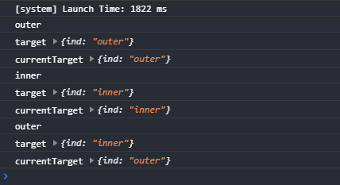

- 事件和事件处理函数 Events vs EventHandle
- 事件是视图层|wxml到逻辑层|js的通讯方式：将用户的行为反馈到逻辑层进行处理
- 事件绑定在组件上；当达到触发事件，就会执行逻辑层中对应的事件处理函数
- 绑定事件使用 bind: 语法
-
在结构中为节点元素绑定事件并指定事件处理函数
<view class="title" bind:tap="test">best wishes</view>
在页面逻辑顶层|data同级，声明事件处理函数；可以不使用关键字function；统一风格即可；建议和小程序示例代码保持一致
test(e){
console.log(e);
},
test: function(e){
console.log(e);
},
//箭头函数；HTML中，this指向window；小程序宿主环境是微信，不是浏览器，所以this为undefined
test: (e)=>{
console.log(e);
}
- 事件类型 Type
- 常见事件有：单击事件tap和触摸事件touch
- 此外，每个组件还有自己的独有的事件，如表单的提交事件submit和重置事件reset、滑动组件的scroll等等，详情请查阅官方文档
-
常用事件
| 分类 |
说明 |
| bindtap |
单击屏幕时触发；类似HTML的click |
| touchstart |
触摸屏幕开始 |
| touchmove |
触摸屏幕移动 |
| touchend |
触摸屏幕结束 |
- 事件对象 Target
- 事件发生时，会触发一个事件对象event：包含事件发生时的很多额外信息，常见的有：
-
type：事件类型
dataset：自定义数据
detail：具体信息，如表单元素的值
target：事件对象目标；绑定 事件的组件
currentTarget：当前事件对象目标，响应事件的组件
touches：一个数组，每个元素为一个 Touch 对象，表示当前停留在屏幕上的触摸点
- 更多事件对象，请访问Vue-events、html-event
-
默认情况下，事件是冒泡机制。当节点元素触发一个事件后，该事件会逐步冒泡至它的父级及父级的父级直至顶级；所以一个事件可以由不同的节点元素响应，这就是currentTarget；而最开始触发事件的是target
- 事件传参
- 通过自定义数据 data- 的方式指定参数
- 利用事件对象目标的dataset获取并使用
- 多数据可以使用解构赋值 - 要求使用同名变量
- 利用自定义数据传参，查看事件对象目标
-
结构 - 一个大矩形包含一个小矩形；分别绑定事件、指定事件处理函数并自定义数据；样式略
<view class="outer" bind:tap="outerTap" data-ind="outer">
<view class="inner" bind:tap="innerTap" data-ind="inner"></view>
</view>
逻辑 - 分别显示事件对象目标和当前事件对象目标
outerTap(e) {
console.log('outer');
console.log('target', e.target.dataset);
console.log('currentTarget', e.currentTarget.dataset);
},
innerTap(e) {
console.log('inner');
console.log('target', e.target.dataset);
console.log('currentTarget', e.currentTarget.dataset);
}
- 分析：
- 单击大矩形时，target和currentTarget都是自己：自己绑定事件，自己响应事件
- 单击小矩形时，由于冒泡的原因，先是小矩形响应事件，然后冒泡到大矩形再响应事件；所以:
- . 对小矩形而言，target和currentTarget都是自己：自己绑定事件，自己响应事件
- . 对大矩形而言，它响应的是小矩形绑定的事件，所以target是小矩形，而currentTarget是大矩形
-

-
bind:tap和bindtap写法都可以
单个事件时，target和currentTarget一样
父子组件多个事件并存时，注意区分target和currentTarget
大多数情况下，父元素由子元素撑开；事件绑定在父元素，点击的实际上是子元素，最后冒泡才由父元素响应，所以使用currentTarget最多
- 点击随机更改背景颜色
-
思路：使用内联样式绑定数据color；获取3个随机数并使用模板语法更新颜色
<view style="background-color: {{color}};" bind:tap="randColor">random color</view>
data: {
color: '#f40'
},
randColor(){
let rand0=parseInt(Math.random()*255)
let rand1=parseInt(Math.random()*255)
let rand2=parseInt(Math.random()*255)
this.setData({
color:`rgb(${rand0},${rand1},${rand2})`
})
}
-
拓展：如何获取随机透明色的颜色
方案：额外增加一个0-1的随机数表示透明度